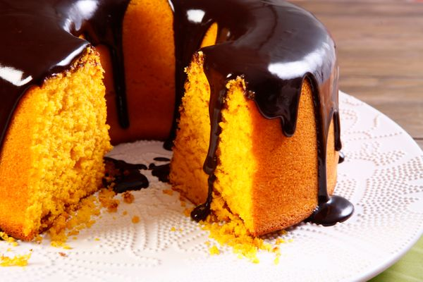
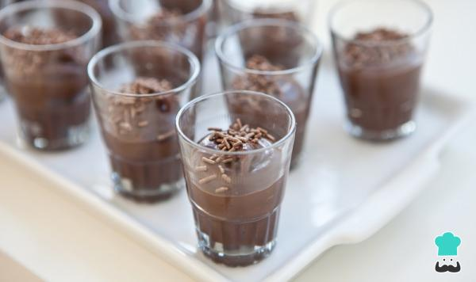

Doces
Bolo de Cenoura
Ingreditentes para a massa
2 cenouras médias, cortadas em cubos 300 g
1/2 xícara de chá de óleo 125 ml
3 ovos
1 1/2 xícara de chá de farinha de trigo 210 g
1/2 xícara de chá de Amido de Milho Maizena Vita + 60 g
2 colheres de chá de fermento em pó 8 g
1 xícara de chá de açúcar 190 g
Ingredientes para a Cobertura
1/2 xícara de chocolate ao leite derretido
1/2 xícara de creme de leite
Modo De Preparo
Pré-aqueça o forno em temperatura média (180°C).
Unte e enfarinhe uma forma de furo central média (20 cm de diâmetro). Reserve.
No copo do liquidificador, coloque a cenoura, o óleo e os ovos, e bata até ficar homogêneo.
Em uma tigela, peneire o amido de milho MAIZENA®, a farinha de trigo, o fermento e o açúcar, junte a mistura de cenoura reservada, e mexa com o auxílio de uma espátula até que vire uma massa uniforme.
Disponha a massa na forma reservada e leve ao forno por 40 minutos, ou até que um palito, depois de espetado na massa, saia limpo. Retire o forno e deixe amornar.
Faça a cobertura: misture o chocolate e o creme de leite, e espalhe por toda a superfície do bolo. Sirva a seguir.
Brigadeiro de Copinho
Ingredientes
1 lata de leite condensado
4 colheres (sopa) de chocolate em pó
1 colher (sopa) rasa de manteiga ou margarina
1 caixinha de creme de leite (200g)
Confeitos pretos e brancos de chocolate e chocolate granulado para decorar
Modo de Preparo
Levar ao fogo em uma panela:leite condensado,chocolate em pó e manteiga ou margarina.
Misturar e mexer até começar desgrudar do fundo da panela.
Desligar o fogo e misturar o creme de leite.
Quando amornar colocar nos copinhos.
Decorar com os confeitos e o chocolate granulado.
Rende 10 copinhos de 40ml.
Mousse de Maracujá

Ingredientes
1 xícara (chá) de suco de maracujá concentrado (200 ml)
1 lata de leite condensado
1 lata de creme de leite
1 envelope de gelatina em pó incolor (12 g) hidratada e derretida conforme instruções da embalagem
Calda
Polpa com sementes de 2 maracujás maduros
3 colheres (sopa) de açúcar
1/3 de xícara (chá) de água
Modo de Preparo
Bata o suco de maracujá com o leite condensado e o creme de leite no liquidificador até obter um creme aerado.
Incorpore a gelatina derretida e bata por 1 a 2 minutos para misturar bem.
Distribua em taças individuais e leve à geladeira por 4 a 6 horas ou até ficar consistente.
Sirva regadas com a calda.
Modo de Preparo da Calda
Leve os ingredientes ao fogo e ferva por 2 a 3 minutos. Utilize fria.
Salgadas
Coxinha de Frango
Ingredientes
1 peito de frango
2 copos de água do cozimento do frango
2 tabletes de caldo de galinha
1 colher de sopa bem cheia de margarina
2 copos de farinha de trigo
Modo de Preparo
Cozinhe um peito de frango com caldo de frango, desfie.
Numa panela refogue o frango com temperos a gosto e reserve.
Coloque numa panela 2 copos da água do cozimento, 1 colher de margarina, derreta a margarina aos poucos vá colocando a farinha de trigo, mexa sem parar para não empelotar.
Deixe esfriar e modele na palma da mão coloque o recheio, passe no ovo e na farinha de rosca e frite.
Bolinho de Bacalhau
Ingredientes
500g de bacalhau dessalgado, limpo, sem pele e sem espinhas
250g de batatas cozidas e passadas no espremedor
3 ovos grandes
2 colheres (sopa) de farinha de trigo
2 colheres (sopa) de salsinha picada
1 pitada de noz-moscada ralada
Sal e pimenta-do-reino a gosto
Azeite abundante para a fritura
Modo de Preparo
Desfie o bacalhau.
Em uma tigela, misture bem os ingredientes, até obter uma massa encorpada.
Com uma colher (sopa), retire porções da massa e molde-as na mão.
Frite os bolinhos, aos poucos, no azeite quente e deixe escorrer sobre papel absorvente.